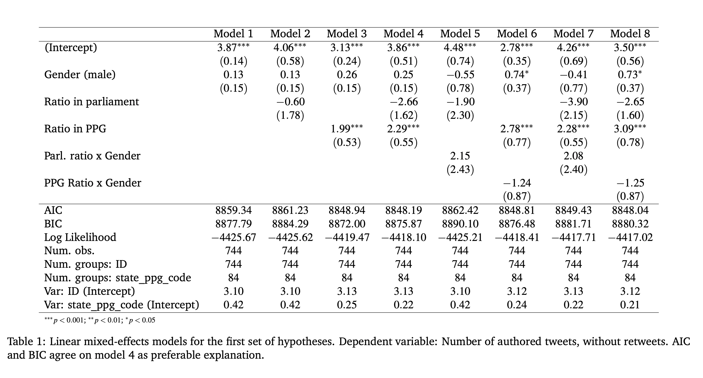
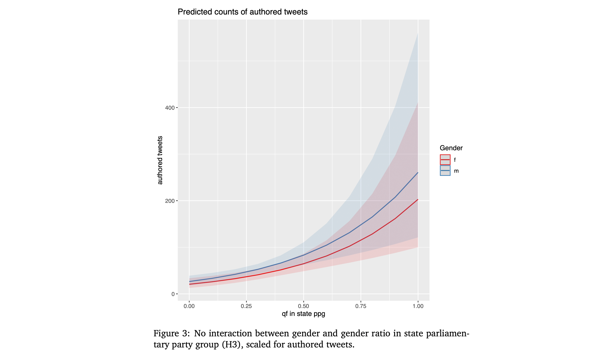
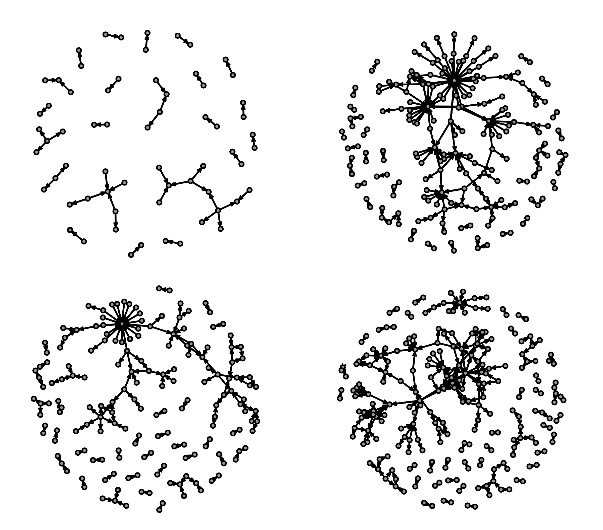
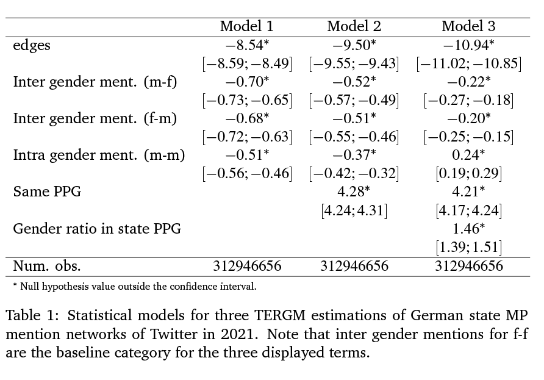

When do women tweet?
An inter-parliamentary, multi-level analysis of gender representation on Twitter
Jan Bucher, PhD fellow, University Heidelberg & Lecturer, Aalen University.
janbucher@gmail.com
Theory
- When do women speak? (Bäck & Debus 2017)
- Critical mass theory (Dahlerup 1988)
- ¬ Critical mass theory (Childs & Krook 2008)
Dependent variables
- Tweets authored by MPs
- Retweets received by MPs
Independent variables
- Gender
- Share of female MPs in parliament
- Share of female MPs in PPGs
(Future) control variables
- # of tweets (for 2nd set)
- # of followers (value of a tweet)
- Left-right placement (via content analysis of tweets?)
- Gov. / opposition roles
- Age / seniority (missing data)
Two sets of hypotheses
H1-3 Tweet authoring and critical mass
H4-6 Reception / retweets
H1 (Baseline: Tweet authoring)
Female MPs author fewer contributions on social media.
H2 (Critical mass for authoring in state parliament)
Female MPs author more contributions on social media, the higher the share of women represented in parliament.
H3 (Critical mass for authoring in state parliamentary party group)
Female MPs author more contributions on social media,
the higher the share of women represented in the parliamentary party group.
H4 (Baseline: MP reception on social media)
Female MPs receive fewer retweets or other support on social media.
H5 (Critical mass for social media reception in state parliament)
Female MPs receive more retweets on social media,
the higher the share of women represented in parliament is.
H6 (Critical mass for for social media reception in state ppg)
Female MPs receive more retweets on social media,
the higher the share of women represented in the parliamentary party group is.
Case selection
- 16 German Landtage (state parliaments)
- Language, culture, national issues and more held stable
Data
- All 140.539 tweets of german state parliamentary MPs in 2021
- MPs: 1731, using Twitter: 973
- Retweets: 507.088
Methods
- Linear mixed-effects model (GLMM)
- PPGs as fixed effects
- Observation-level random effects
Descriptive statistics: Gender
Descriptive statistics: Tweets
Analysis: Authored tweets

Analysis: Authored tweets interactions

Preview: Relational analysis

Relational confirmatory analysis

Results: Authored tweets
- H1 ❌: Female MPs do not tweet less often.
- ¬H2(✔): No CMT for parliamentary gender ratios
- H3 ✔: Confirmed CM for state PPGs for authored tweets, but no interaction.
Results: Retweets
- H4 ❌: Female MPs are not retweeted less.
- ¬H5(✔): No CM effects for parliamentary gender ratios
- H6 ✔: CM effects for state PPGs for retweets, but no interaction..
Conclusion
- Critical mass theory is sensitive to the setting.
- The social media output of state parliamentary party groups seem to benefit from more balanced gender ratios.
- Relational perspective?